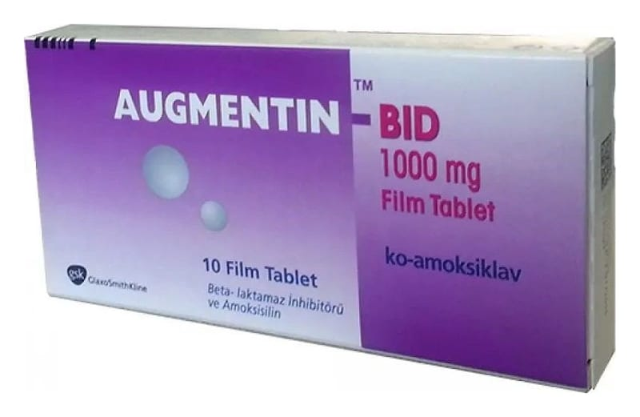

Augmentin 875 mg/125 mg Film Kaplı TABLET,10 Adet

Ne için kullanılır
KT · Bölüm 1AUGMENTİN, geniş spektrumlu (bakteri ve mikropların birçok çeşidine karşı etkili) bir antibakteriyel ilaçtır ve enfeksiyonlara neden olan bakterileri öldürerek etkisini gösterir. Amoksisilin ve klavulanik asit adı verilen iki farklı etkin madde içermektedir. Amoksisilin, bazen etkisiz hale getirilebilen (çalışması durdurulabilen) “penisilinler” adı verilen bir ilaç grubundandır ve diğer etkin madde klavulanik asit, amoksisilinin etkisiz hale getirilmesini engellemektedir.
AUGMENTİN 875 mg/125 mg film kaplı tablet, blister ambalajlarda, 10, 14 ve 20 adet, beyaz ile beyaza yakın, kapsül biçiminde, bir tarafı çentikli bir tarafı AUGMENTIN BID 1000 yazılı film kaplı tabletler halindedir.
AUGMENTİN’in içeriğinde bulunan klavulanik asit aktivitesine eşdeğer potasyum klavulanat üretiminde inek sütünden elde edilen hammadde kullanılmaktadır.
AUGMENTİN, aşağıdaki durumlarda AUGMENTİN‘e duyarlı bakterilerin neden olduğu bakteriyel enfeksiyonların kısa süreli tedavisinde yetişkinlerde ve çocuklarda kullanılır: • Bakterilerin neden olduğu sinüs iltihabı (uygun tanı ile teşhis edilen), akut orta kulak iltihabı, tekrarlayan bademcik iltihabı gibi üst solunum yolu enfeksiyonları • Kronik bronşitin akut alevlenmeleri (uygun tanı ile teşhis edilen), toplum kökenli pnömoni (kişinin günlük yaşamı sırasında ortaya çıkan akciğer iltihabı) gibi alt solunum yolu enfeksiyonları • İdrar kesesi iltihabı ve böbreklerin bakteriyel iltihabı gibi idrar yolları ile ilgili enfeksiyonlar • Özellikle selülit (deri altı tabaka ve yağ dokusu iltihabı) ve hayvan ısırmaları gibi deri ve yumuşak doku enfeksiyonları • Yaygın selülit (deri altı tabaka ve yağ dokusu iltihabı) ile birlikte şiddetli diş apseleri gibi dental enfeksiyonlar • Özellikle kemik iltihabı (osteomiyelit) olmak üzere kemik ve eklem enfeksiyonları